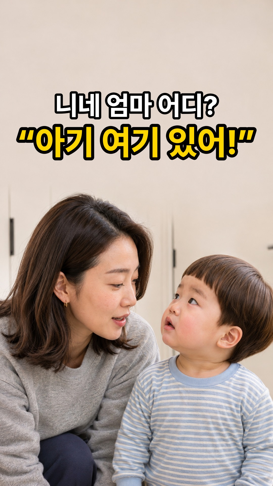
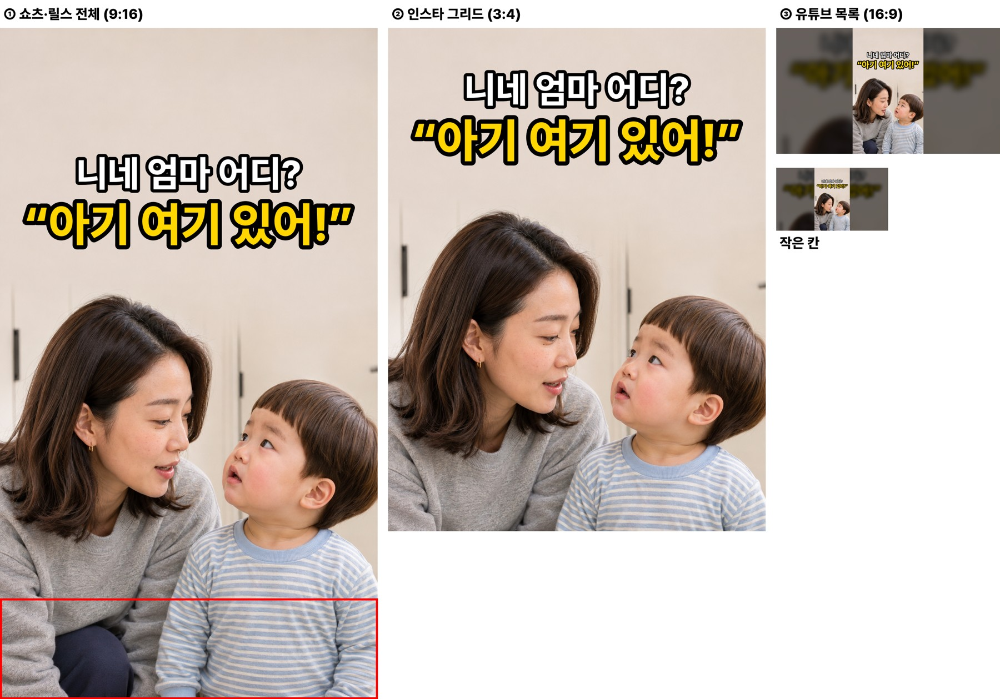
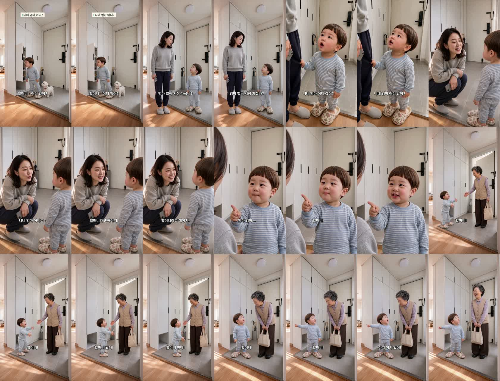
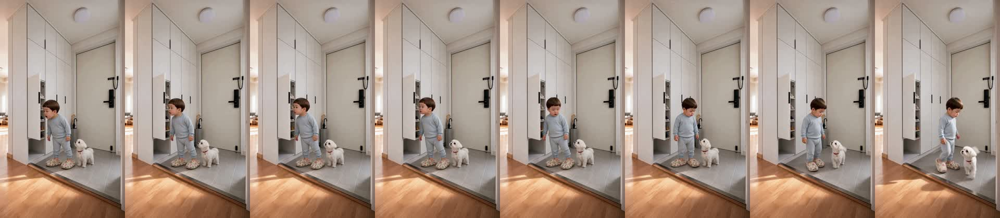
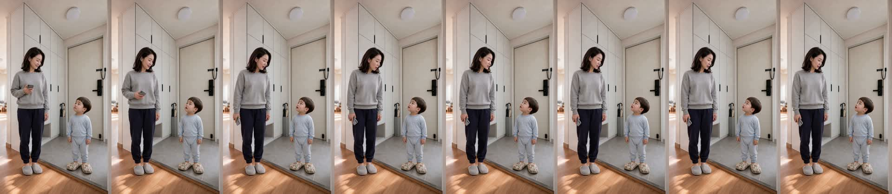
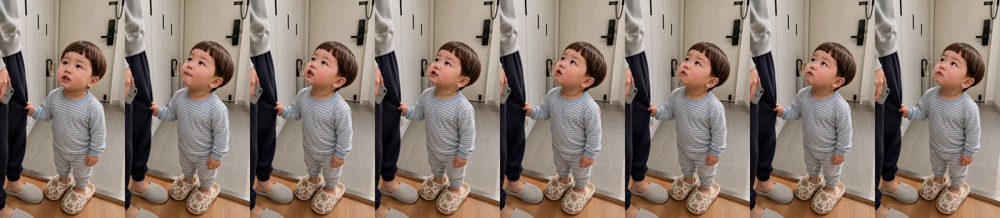
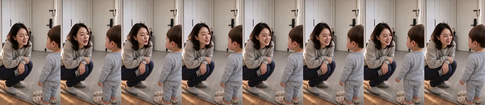
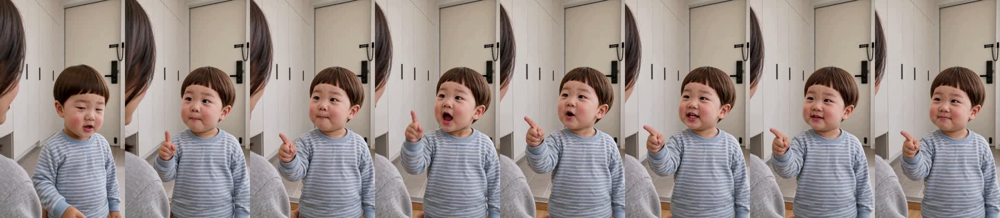
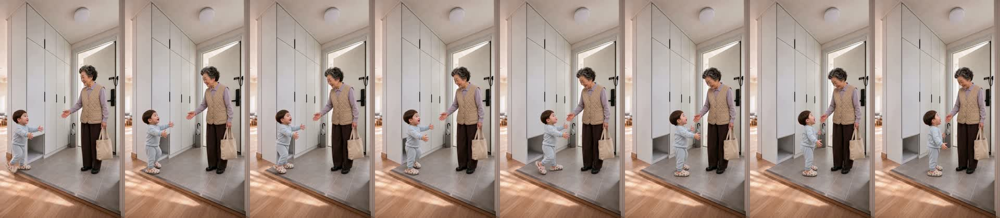
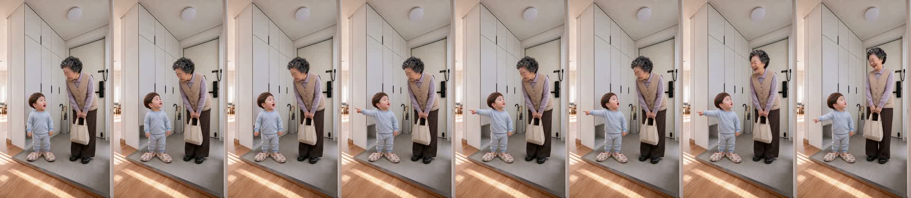

| C01 | 도윤: “할머니 어딨어?” 현관에서 할머니 꽃무늬 슬리퍼를 신은 채 열린 신발장 안을 들여다보는 도윤과 옆에 앉은 콩이 |
|---|---|
| C02 | 엄마: “어? 엄마 벌써 시장 가셨나?” 왼쪽 마루로 걸어 나와 현관의 도윤을 내려다보며 혼잣말하는 엄마 |
| C03 | 도윤 [후킹]: “니네 엄마 어디 갔어?” 엄마의 '엄마' 소리를 그대로 따라 하며 엄마 바지 자락을 잡고 올려다보는 도윤 |
| C04 | 엄마: “니네 엄마 아니고, 할머니라고 해야지~” 현관턱에 쪼그려 앉아 웃음을 참으며 도윤에게 다정하게 일러 주는 엄마 |
| C05 | 도윤: “엄마 엄마, 할머니!” 검지로 엄마 가슴을 가리키며 자기 나름대로 족보를 정리해 외치는 도윤 |
| C06 | 할머니: “할머니~ 할머니 왔다~” 오른쪽 현관문이 열리며 에코백을 든 할머니가 들어서고 반갑게 다가가는 도윤 |
| C07 | 도윤 [펀치라인]: “할머니! 아기 여기 있어!” 할머니를 올려다보며 왼쪽 마루(엄마 쪽)를 손가락으로 가리키는 도윤과 함박웃음이 터진 할머니 |







